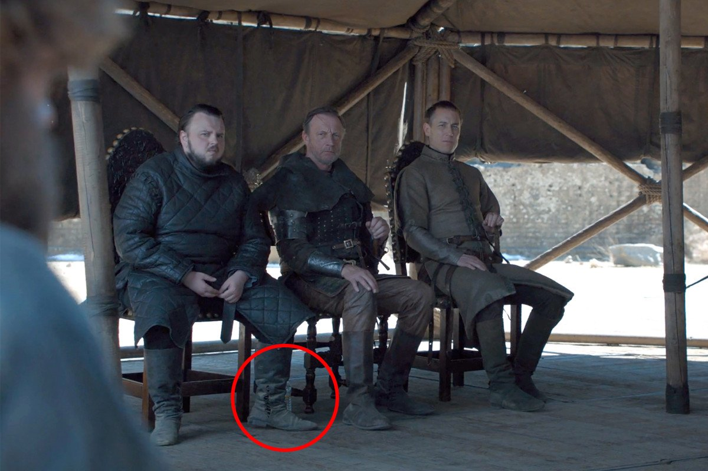

White House Launching Israeli-Palestinian Peace Plan Next Month in Bahrain

NEW MARK LEVIN BOOK HITS #1 ON AMAZON
Update: Alabama gunman clad in camo body armor who killed cop now in custody...
Trump rages at Fox News for covering Buttigieg...

Another GoT gaffe shows up in the series finale; this time water bottle...
John Lennox: Science cannot bury God, but it can bury atheism...
John Piper: 'There Is No Such Thing As Gay Marriage'...
Trump, China and trade: Who blinks first?
Surges past Trump on Facebook, Google spending...
Ford to cut 7,000 jobs by August, including 900 this week
Iconic 9/11 firefighter claims he was snubbed for being white...
Trump Preparing Memorial Day Pardons for Soldiers Accused of War Crimes?
Al Jazeera Apologizes After Journalists Claimed Zionists 'Benefited' From Holocaust
US pastor runs network giving 50,000 Ugandans bleach-based 'miracle cure'...
Sutherland Springs Church Opens New Sanctuary 18 Months After Massacre
Methodist evangelicals raise concerns over gay marriage plans...

TRUMP SUPPORTS ABORTION IN CASES OF RAPE, INCEST
Another: 'I am the 1 percent used to justify 100 percent of abortions'...
In UK first, docs repair the spine of baby with spina bifida -- while still in womb!
Would use executive authority to force businesses to submit to gender pay bureaucracy...
Trans 'dads' tell doctors: 'You can be a man and have a baby'
Middle School Invites Drag Queens To Educate And Perform For Students
GOP lawmaker: Trump has engaged in multiple actions that 'meet the threshold for impeachment'
First Republican in Congress to call for Trump's impeachment
Twitter fine with Jim Carrey illustrating Alabama gov. getting brains sucked out...
Trump appears to confirm cyberattack against Russia during midterms...
Political pitfalls: Iran tests 'America First' pledge...
Maine to become first state to ban Native American mascots in public schools
Woman who won $1M lottery jackpot 1 year ago arrested in major drug bust...
3 states, including 2 key 2020 swing states, just set new all-time lows for unemployment...
Map: The most distressed communities in America...
© 2019 Christian Daily Reporter | Editor: Adam Ford
CDR Comics | CDR Talks | CDRticles | Manifesto
100% reader-funded: Support CDR!